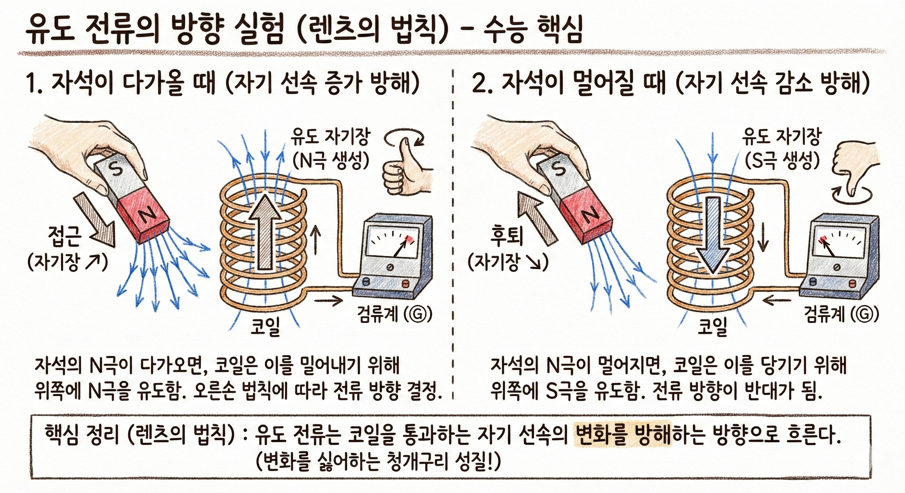
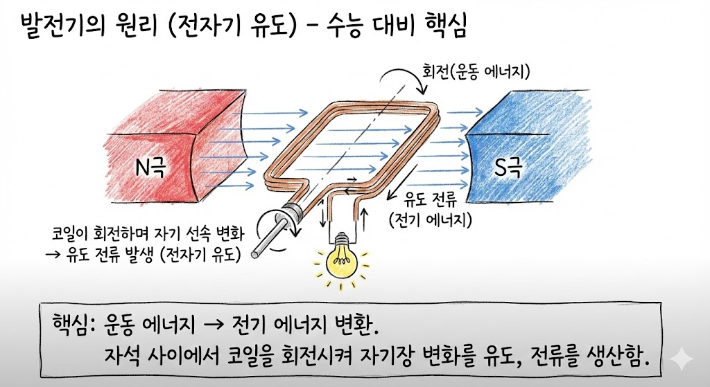

01. 전자기 유도 법칙
- 정의:
코일 주변의 자기장이 변할 때 코일에 유도 전류가 흐르는 현상. - 패러데이 법칙:
자석이 빠르게, 자석이 강할수록, 코일을 많이 감을수록 센 전류가 흐름. - 렌츠 법칙 (방향):
자기장의 변화를 방해하는 방향으로 전류 발생.

Self Check
Q. 자석을 코일 속에 넣을 때와 뺄 때 전류의 방향은?
반대 방향
02. 발전기 (Generator)
- 구조:
자석 사이에 회전하는 코일이 들어있는 구조. - 작동:
터빈 회전 → 자기장의 변화 → 전자기 유도로 유도 전류 발생. - 에너지 전환:
운동(역학적) 에너지 → 전기 에너지.

Self Check
Q. 발전기에서 전기를 만들기 위해 회전시키는 날개 장치는?
터빈 (Turbine)
03. 터빈을 돌리는 발전 방식
화력 발전
화석 연료 연소
화학E → 열E → 운동E → 전기E
핵발전 (원자력)
우라늄 핵분열
핵E → 열E → 운동E → 전기E
- 수력 발전:
높은 곳 물의 위치(퍼텐셜)에너지 → 수차(터빈) 회전 → 전기 에너지. - 공통점:
모두 증기나 물의 힘으로 터빈을 돌려 발전기를 작동함.
Self Check
Q. 화력, 수력, 핵발전소의 공통적인 핵심 장치는?
터빈과 발전기
04. 태양광 발전 (터빈 없음)
- 원리:
반도체 태양 전지를 이용해 빛에너지를 직접 전기 에너지로 변환. - 결정적 차이점 (빈출!):
터빈이나 발전기를 사용하지 않음! (소음과 회전 마모가 없음). - 장단점:
온실가스 배출이 없는 친환경 발전이지만, 일조량(날씨/밤낮)에 따른 발전량 편차가 큼.
Self Check
Q. 터빈을 돌리지 않고 빛을 전기로 직접 바꾸는 발전은?
태양광 발전
05. 발전과 환경 영향
- 화력 발전:
화석 연료 연소 시 온실 기체(CO₂) 대량 배출 → 지구 온난화 및 미세먼지 유발. - 핵발전:
온실가스 배출은 적으나, 방사성 폐기물 처리와 안전성 문제 대두. - 대안 (신재생 에너지):
풍력, 수소 연료 전지, 조력 등 지속 가능한 친환경 에너지 체계로의 전환 필요.
Self Check
Q. 화력 발전 시 배출되어 지구 온난화를 일으키는 대표적 온실 기체는?
이산화 탄소 (CO₂)